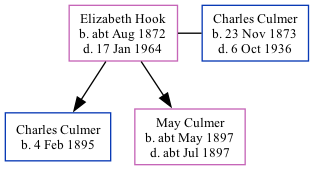

Elizabeth Sarah Culmer (née Hook) cAug 1872 - 1964
[ Home ] | [ Calendar ] | [ Surnames Index ] | [ Family History ]Elizabeth Hook, the wife of Charles James Culmer (the first cousin twice-removed on the mother's side of Nigel Horne), was born in Crockenhill, Kent, England c. Aug 18721,2,3,4,5,6,7,8 and married Charles (a fish carrier with whom she had 2 children: Charles Frederick and May Ellen Elizabeth) in St. Mary Cray, Kent, England on Aug 27, 18939.
Throughout her life, she lived on Farwig Lane, Bromley, Kent on Mar 31, 19011; and in Hallowell, Prince Edward, Ontario, Canada in 19112. In 1906 she traveled from Liverpool, Merseyside, England to Portland, Cumberland, Maine, USA, arriving on 1 Apr.
She died on Jan 17, 1964 in Prince Edward County Memorial Hospital, Picton, Ontario.
Children
- Charles Frederick was born on Feb 4, 1895
- May Ellen Elizabeth was born c. May 1897
Citations
- 1901 England, Wales & Scotland Census - Findmypast (was age 28 and the wife of the head of the household)
- Canada Census 1911 - Findmypast (was the wife of the head of the household)
- The National Archives of the UK (TNA); Kew, Surrey, England; Class: RG12; Piece: 644; Folio: 80; Page: 6
- Class: RG11; Piece: 869; Folio: 71; Page: 1; GSU roll: 1341206
- Class: RG13; Piece: 681; Folio: 80; Page: 39
- Reference Number: RG 31; Folder Number: 83; Census Place: Hallowell (Township), Prince Edward, Ontario; Page Number: 7
- Year: 1911; Census Place: 11 - Hallowell, Prince Edward, Ontario; Page: 4; Family No: 43
- England & Wales births 1837-2006 - Findmypast
- England & Wales Marriages 1837-2005 - Findmypast
Media
England & Wales births 1837-2006 - BMD/B/1872/3/AZ/000324/017
England & Wales marriages 1837-2005 - BMD/M/1893/3/AZ/000156/129
England Marriages 1538-1973 - R_849368751/2
England Marriages 1538-1973 - R_849369703/2
Family Tree
Generated by Ged2Site. Last updated on Jul 20, 2025